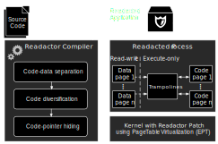
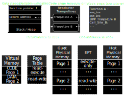
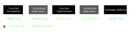

<!doctype html>
<html lang="en">

  <head>
    <meta charset="utf-8">

    <title>Readactor - Advanced Topics in Computer Security</title>

    <meta name="description" content="Practical Code Randomization Resilient to Memory Disclosure">
    <meta name="author" content="Fabrizio Ferrai">

    <meta name="apple-mobile-web-app-capable" content="yes" />
    <meta name="apple-mobile-web-app-status-bar-style" content="black-translucent" />

    <meta name="viewport" content="width=device-width, initial-scale=1.0, maximum-scale=1.0, user-scalable=no, minimal-ui">

    <link rel="stylesheet" href="../reveal.js/css/reveal.css">
    <link rel="stylesheet" href="../reveal.js/css/theme/night.css" id="theme">

    <!-- Printing and PDF exports -->
    <script>
      var link = document.createElement( 'link' );
      link.rel = 'stylesheet';
      link.type = 'text/css';
      link.href = window.location.search.match( /print-pdf/gi ) ? '../reveal.js/css/print/pdf.css' : '../reveal.js/css/print/paper.css';
      document.getElementsByTagName( 'head' )[0].appendChild( link );
    </script>

    <!--[if lt IE 9]>
    <script src="../reveal.js/lib/js/html5shiv.js"></script>
    <![endif]-->

    <!-- For syntax highlighting -->
	<link rel="stylesheet" href="../reveal.js/highlight.js/src/styles/solarized-light.css" id="highlight-theme">
	<link rel="stylesheet" href="http://maxcdn.bootstrapcdn.com/font-awesome/4.3.0/css/font-awesome.min.css">
  </head>

  <style type="text/css">
  .reveal pre code {
    color: #3f3f3f;
    background: #eee none repeat scroll 0% 0%;
    font-size: 1.5em;
    line-height: 1.4em;
    border-radius: .2em;
  }

  .fa {
  	margin-left: .3em;
  }
  </style>

  <body>
    <div class="reveal">
      <!-- Any section element inside of this container is displayed as a slide -->
      <div class="slides">
        <!-- Slides are separated by newline + three dashes + newline, vertical slides identical but two dashes -->
			<section data-markdown data-separator="^\n---\n$"
			         data-separator-vertical="^\n--\n$">
				<script type="text/template">

# Readactor
#### Practical Code Randomization Resilient to Memory Disclosure

### Paper Presentation - ATCS
#### Fabrizio Ferrai - [ferrai.io](http://ferrai.io)


---

# Their point:

--

<!-- .slide: data-background="#cc0000" -->
# TL;DR: <br>No more ROP

--

<!-- .slide: data-background="http://i.giphy.com/90F8aUepslB84.gif" -->

---

# Wait, <br>what's ROP?

--

## ELI5 ROP

- Code Reuse Attacks: exec benign code to perform illegal actions <!-- .element: class="fragment" -->
- In practice: exploit a memory corruption error to hijack the IP <!-- .element: class="fragment" -->
- The most famous <!-- .element: class="fragment" --> is **Return Oriented Programming**
- Idea: chain together existing short instruction <!-- .element: class="fragment" --> sequences (*gadgets*) one after another to perform the malicious behaviour

--

<!-- .slide: data-background="img/howtobasic.jpeg" -->
## How To Basic

- To chain those gadgets one needs to know <!-- .element: class="fragment" --> they **exist**
- <!-- .element: class="fragment" --> And **where** they are
- Then inject the right pointers in <!-- .element: class="fragment" --> the **right places**

--

## The Threat of<br>Memory Disclosure


--

## Preventing <br> Direct Memory Disclosure
* Rewriting inter-page references <!-- .element: class="fragment" -->
* Redirect attempts to read code pages <!-- .element: class="fragment" -->

<br>
### How about indirect? <!-- .element: class="fragment" -->
It depends on the granularity of the code randomization <!-- .element: class="fragment" -->

--

## ROP types
* Static ROP <!-- .element: class="fragment" -->
* JIT-ROP with direct disclosure <!-- .element: class="fragment" -->
* JIT-ROP with indirect disclosure <!-- .element: class="fragment" -->
* ROP on JIT generated code <!-- .element: class="fragment" -->
* Return-into-libc <!-- .element: class="fragment" -->

---

# The main idea

--

## Fighting<br>Code Reuse Attacks

* Control Flow Integrity
* Code Randomization

--

## Why Randomization

* Fine grained CFI has performance issues <!-- .element: class="fragment" -->
* Precision of CFI is as good as the underlying CFG <!-- .element: class="fragment" -->
* Randomization is known to be efficient <!-- .element: class="fragment" -->

---

# Readactor design



--

## Trampolines
### Separate Code and Data



--

## Code Randomization Techniques
#### (at compile time)
* Function permutation
* Register Allocation Randomization
* Callee-saved register save slot reordering

--

<!-- .slide: data-background="img/muffins.jpeg" -->
## Recipe

* **Kernel patch, ~100 LOC**
* **Hypervisor, ~500 LOC**
* **LLVM patch, ?**
* **V8 JIT patch, ~1k LOC**

--

## The Kernel Patch

#### Extended Page Tables (EPT)
* Into the Linux Kernel
* Allows programs to mark pages as exec-noread

--

## Hypervisor


--

## LLVM patch


--

## How Readacted JIT Works



--

## The JIT Patch


---

# Achievements

--

## ROP types (revisited)
* Static <!-- .element: class="fragment" --> ROP: <i class="fa fa-check"></i>
* JIT-ROP with direct <!-- .element: class="fragment" --> disclosure: <i class="fa fa-check"></i>
* JIT-ROP with indirect <!-- .element: class="fragment" --> disclosure: whole-functions reuse, random data flow, almost <i class="fa fa-check"></i>
* ROP on JIT generated <!-- .element: class="fragment" -->code: direct <i class="fa fa-check"></i>, indirect <i class="fa fa-code-fork"></i>
* <!-- .element: class="fragment" --> Return-into-libc: <i class="fa fa-times"></i>

--

## Performances are awesome


---

# Recap


---

<!-- .slide: data-background="img/comments.jpeg" -->
# Comments
* Awesome paper
* No side channel
* Only runs on Real Iron
* Those randomization techniques are sufficient?
* No Return-into-libc
* Other ROP types?

---

<!-- .slide: data-background="#00aa00" -->

# Thank you!


#### Readers: Gianluca Venturini, Marco Balduini

---


Queste slides sono licenziate Creative Commons<br>
Attribution-ShareAlike 3.0 Unported

## [ferrai.io](http://ferrai.io)


          </script>
        </section>
      </div>

    </div>

    <script src="../reveal.js/lib/js/head.min.js"></script>
    <script src="../reveal.js/js/reveal.js"></script>

    <script>

    // Full list of configuration options available at:
    // https://github.com/hakimel/reveal.js#configuration
    Reveal.initialize({
      controls: true,
      progress: true,
      history: true,
      center: true,

      transition: 'slide', // none/fade/slide/convex/concave/zoom

      // Optional reveal.js plugins
      dependencies: [
        { src: '../reveal.js/lib/js/classList.js', condition: function() { return !document.body.classList; } },
        { src: '../reveal.js/plugin/markdown/marked.js', condition: function() { return !!document.querySelector( '[data-markdown]' ); } },
        { src: '../reveal.js/plugin/markdown/markdown.js', condition: function() { return !!document.querySelector( '[data-markdown]' ); } },
        { src: '../reveal.js/plugin/highlight/highlight.js', async: true, callback: function() { hljs.initHighlightingOnLoad(); } },
        { src: '../reveal.js/plugin/zoom-js/zoom.js', async: true },
        { src: '../reveal.js/plugin/notes/notes.js', async: true }
      ]
    });

  </script>

  </body>
</html>
